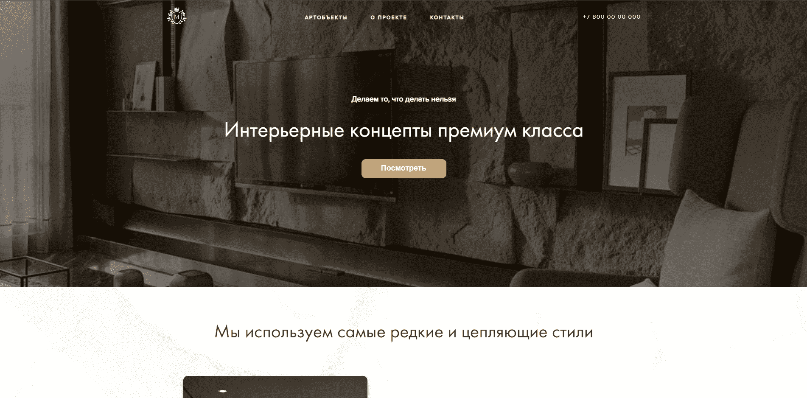
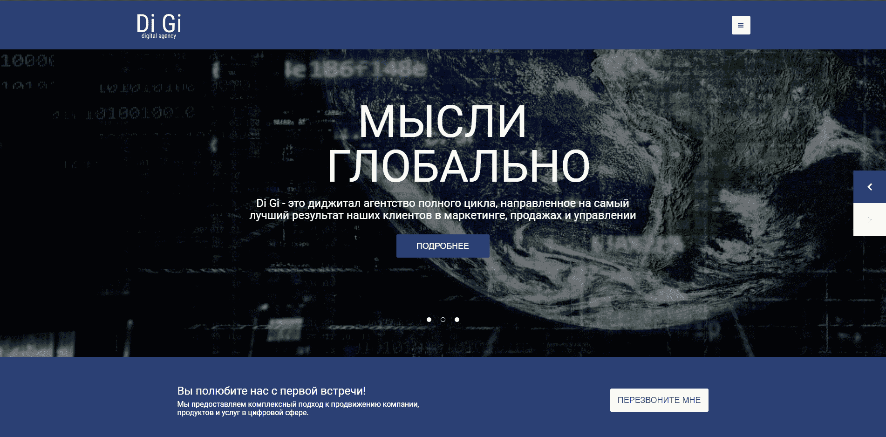
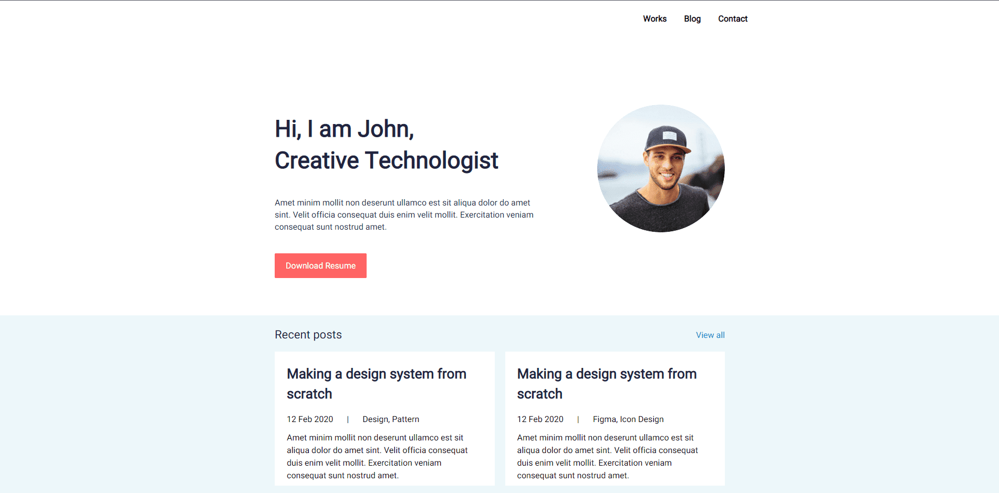
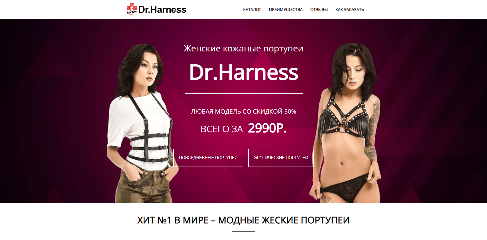
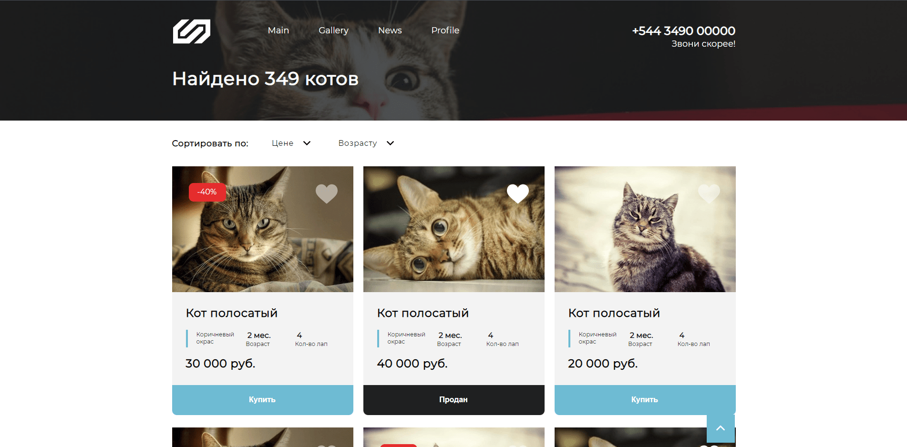
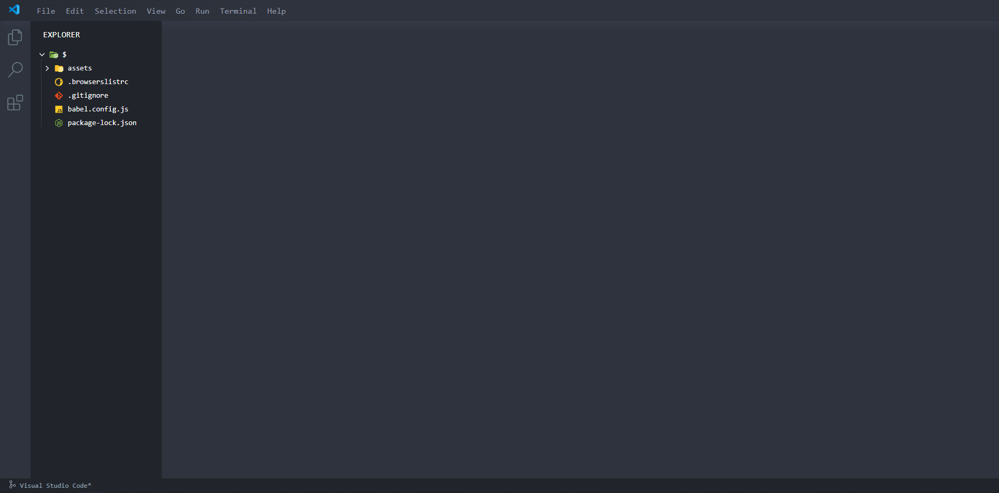

Обо мне
Ответственный, креативный верстальщик.
Нахожусь на заре своей карьеры, но уже могу похвастаться определенным набором знании.
Кайфую от того что я делаю. У меня нет большого опыта, но есть горящие глаза и горы потенциала.
Курс своего профессионального роста держу на frontend-разработчика.
В свободное время изучаю Javascript и всё что с ним связано.
| Имя | : | Шерали |
| Фамилия | : | Мийзамов |
| Отчество | : | Шермаматович |
| Адресс | : | Кыргызстан г. Бишкек |
| Телефон | : | +996705470447 |
| : | sherali920825@yandex.com | |
| website | : | https://github.com/Ali-Romero |
Навыки
Хорошие знания: HTML, CSS, SASS, Stylus, PUG, Git, БЭМ.
Опыт работы c Figma, Adobe Photoshop, Npm.
Опыт кроссбраузерной, адаптивной, валидной вёрстки.
Начальные знания Javascript.
Есть опыт использования jQuery, jQuery-плагинов.
Создал собственный фреймворк для вёрстки, основанный на Gulp. Вот ссылка на него:
Профессиональные навыки
- 90%
- 90%
- 45%
- 55%
- 35%
- 65%
Портфолио
Здесь вы можете посмотреть моё портфолио.
Тут моих работ не много, но в будущем, я думаю,
этот "портфельчик" обязательно пополниться визуально красивыми и интересными работами !








Пет-проекты
В этом блоке размещены ссылки на мои пет-проекты.
Перейдя по этим ссылка можете в живую на них посмотреть, "пощупать" их изнутри.
Так же на GitHabe есть репозитории с этими работами, где в каждом из них имеются исходники.
Там же можете глянуть на мой код-стайл, если будет интересно.
- Работа № 1
- Работа № 2
- Работа № 3
- Работа № 4
- Работа № 5
- Работа № 6